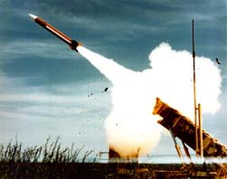

Propulsion Science and Technology is a small, woman-owned business,founded in 1987 to pursue research and development in the modeling of high speed, chemically reacting rocket plume flowfields for all types of missile propulsion systems and related flow environments.

PST is recognized internationally for its major contributions to the understanding of rocket plume phenomenology and its impact on IR/ UV signatures, radar cross section and radar attenuation.
A key business area has been the development of the Standardized Plume Flowfield Model (SPF-III), utilized for low altitude(<~70km) rocket plume flowfield predictions.
SPF-III is used widely within government and industry to compute plume flowfields, providing gas and particle properties to subsequent radiative signature analysis, radar cross section/RF attenuation analysis, plume impingement analysis and environmental impact studies.
PST has a diversified technical staff of experienced research scientists with backgrounds in the following areas:
Fundamentals
- Computational Fluid Dynamics (CFD)
- Chemically reacting flows
- Gas-Particle nonequilibrium flows
- Turbulent flows
- IR/UV radiation
- Plasma/turbulence interactions
- Acoustics
- Electromagnetic wave propagation
- Quantum chemistry methods
- Neural networks
Applications
- Rocket plume flowfields
- Rocket nozzle flowfields
- Plume IR signatures
- Plume UV signatures
- Plume radar attenuation
- Plume radar cross section
- Aircraft plume flowfields
- Plume-hardbody interactions